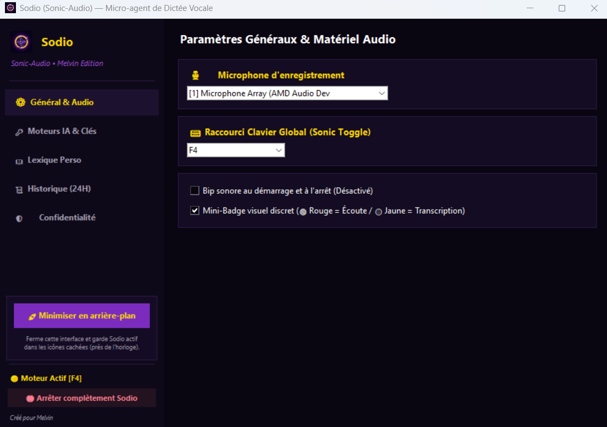
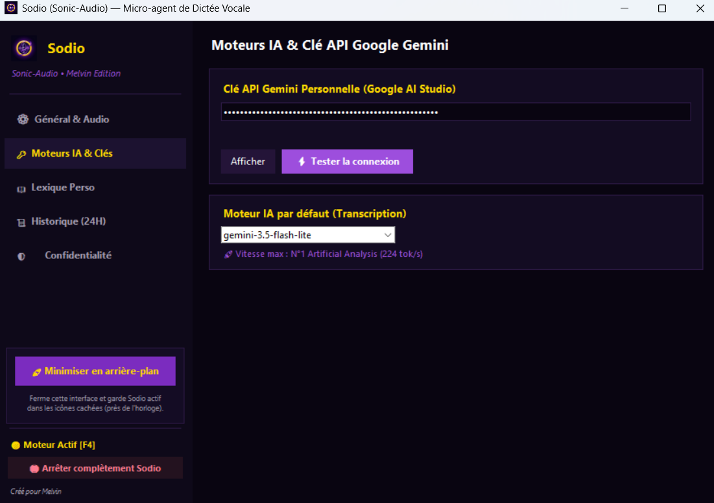
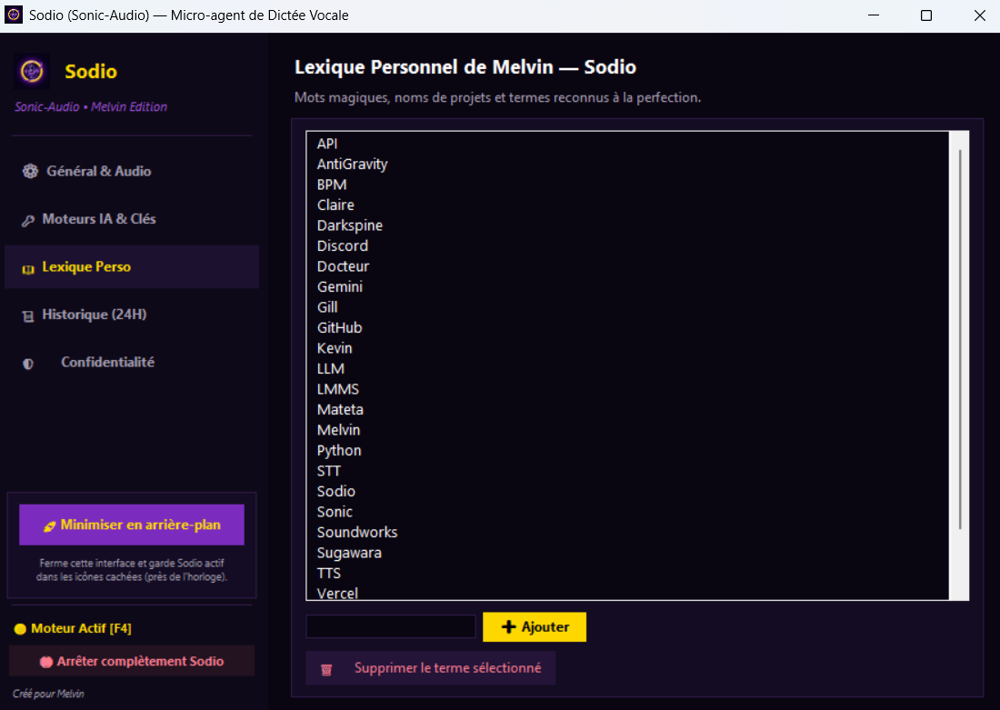
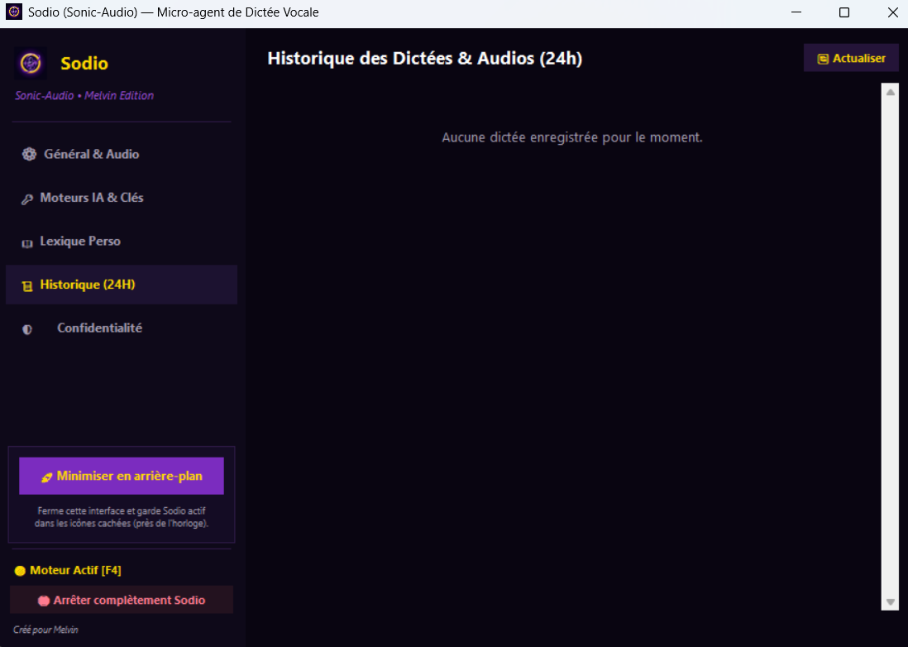
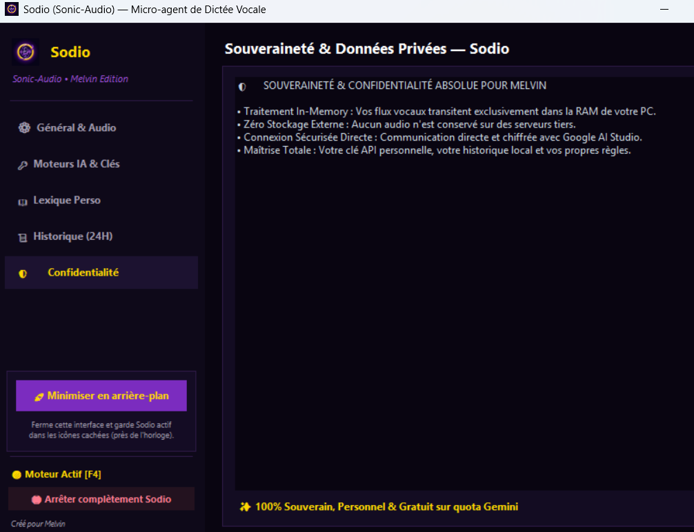
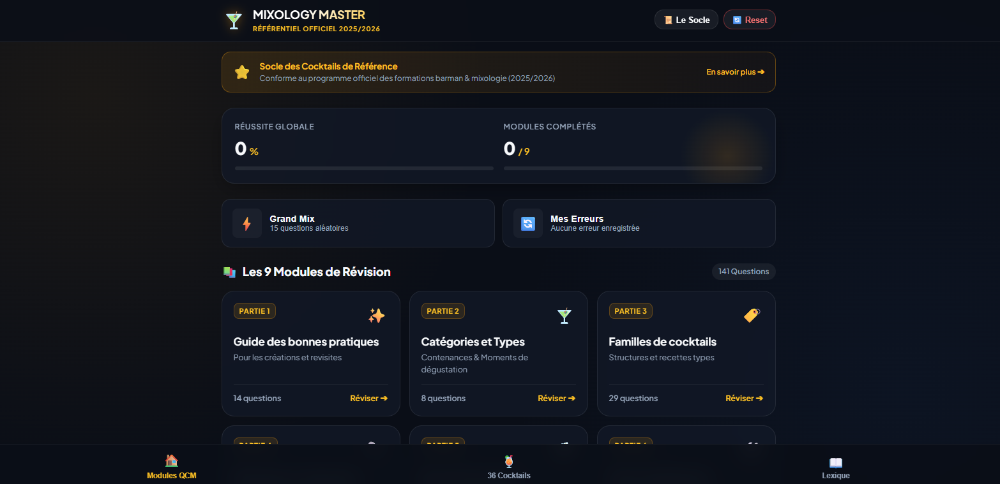
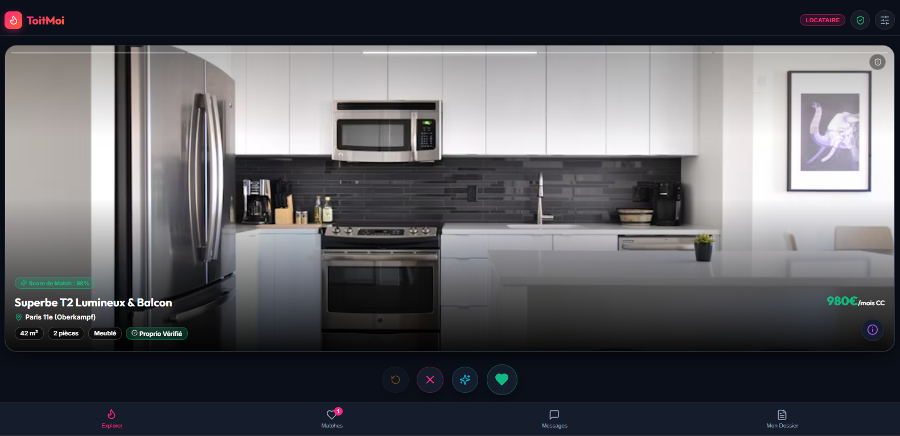
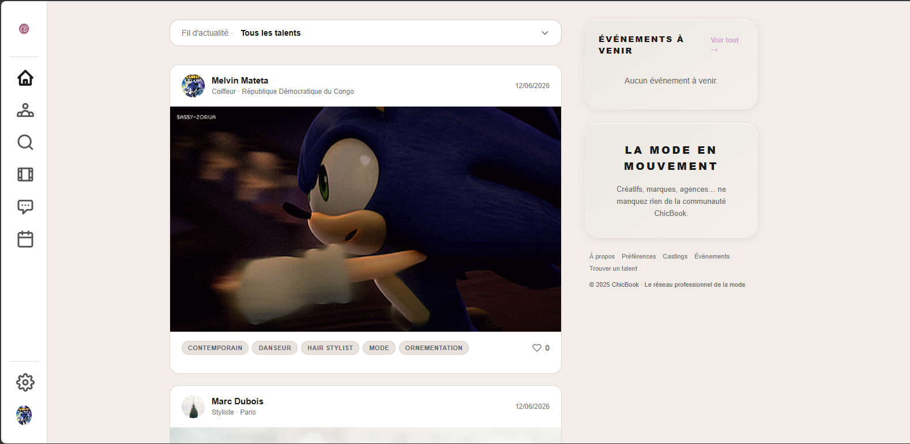
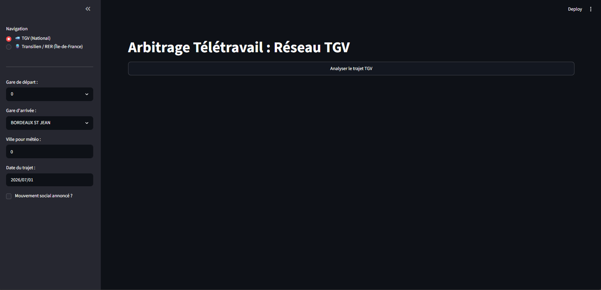
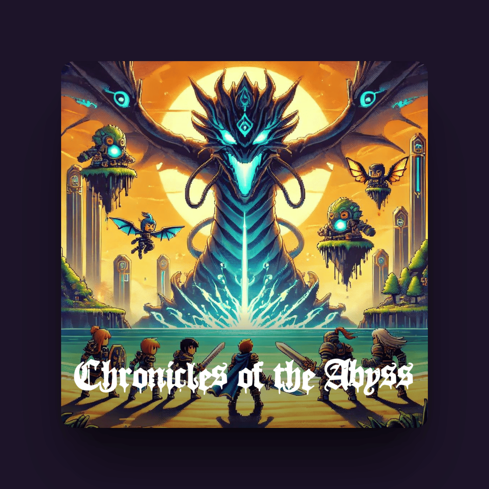

Sodio (Sonic-Audio) v1.0.0
Compétences
Python, IA Générative
Équipe
Melvin Mateta
Date
Octobre 2026

Description du Projet
Sodio (Sonic-Audio) est un micro-agent de bureau Windows souverain et ultra-rapide de dictée vocale, pensé et développé sur-mesure pour fluidifier le workflow créatif et technique quotidien.
Inspiré de l’énergie mystique de Darkspine Sonic (Aura violette électrique et anneaux dorés), Sodio élimine toute latence : le flux de voix est capturé directement en mémoire vive (RAM) à 16 kHz, analysé par l'API multimodale Google Gemini Flash-Lite, puis injecté instantanément sous le curseur dans n'importe quel logiciel (VS Code, terminal, navigateur, Discord) en moins de 1,2 seconde.
Paramètres Audio & Déclenchement Sonic-Toggle
Grâce à un hook clavier global bas niveau non-bloquant, un simple appui sur le raccourci (par défaut F4) déclenche l'enregistrement sans jamais voler le focus de la fenêtre de travail en cours. L'utilisateur peut sélectionner son périphérique d'entrée micro, ajuster la sensibilité et choisir le niveau de feedback audio et visuel (Aura HUD).

Moteur IA Multimodal & Gestion de Clé
Sodio s'appuie directement sur les modèles multimodaux de pointe de Google Gemini via le quota personnel gratuit de Google AI Studio. L'interface dédiée permet d'enregistrer et de tester sa clé en toute sécurité, de basculer de modèle (Gemini Flash-Lite) et d'assurer une ponctuation et un formatage automatique parfait du langage parlé.
Lexique Personnel & Jargon Spécialisé
Pour pallier les erreurs courantes de transcription sur les termes techniques ou artistiques rares (noms de VST, logiciels musicaux comme LMMS, frameworks de dev, terminologie IA), Sodio intègre un dictionnaire personnalisé interactif. Chaque mot ajouté est injecté dans le prompt système pour garantir une retranscription fidèle dès le premier essai.


Historique Intelligent & Ré-écoute
L'application garde une trace des dictées récentes avec horodatage, durée d'enregistrement et temps de calcul. L'utilisateur peut ré-écouter le fichier audio in-memory sauvegardé, copier le texte généré dans le presse-papier en un clic ou corriger une dictée antérieure.
Confidentialité Locale & Purge 24h
Conçu avec une politique stricte de souveraineté des données, Sodio ne transmet aucun audio à des serveurs tiers en dehors de l'appel direct à l'API Google via la clé de l'utilisateur. Tous les fichiers audio temporaires conservés pour la ré-écoute sont automatiquement purgés après 24 heures.

Autres Projets

Mixology Master
Application d'apprentissage barman & cocktails.
ToitMoi
Application immobilière interactive swipe & match.
ChicBook
Job board spécialisé pour artistes et recruteurs.
Arbitrage Travail-Région
Outil d'aide à la décision télétravail sous Streamlit.